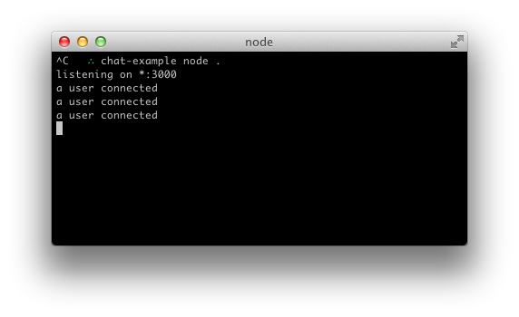
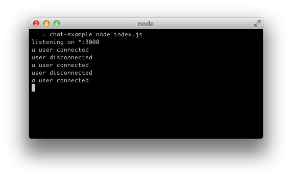

Web App And Mobile Browser Support
First let’s create a package.json manifest file that describes our project.
{
"name": "socket-chat-example",
"version": "0.0.1",
"description": "my first socket.io app",
"dependencies": {}
}
Express is the de-facto standard for a light weight web framework in node.js
Express is a minimal and flexible node.js web application framework, providing a robust set of features for building single and multi-page, and hybrid web applications.
Using npm to install express
npm install --save express
create an index.js file
var app = require('express')();
var http = require('http').Server(app);
app.get('/', function(req, res){
res.send('<h1> Hello world</h1>');
});
http.listen(3000, function(){
console.log('listening on *:3000');
});
If you run node index.js you should see the following:
And if you point your browser to http://localhost:3000:
So far in index.js we’re calling res.send and pass it a HTML string. Our code would look very confusing if we just placed our entire application’s HTML there. Instead, we’re going to create a index.html file and serve it.
Let’s refactor our route handler to use sendfile instead:
app.get('/', function(req, res){
res.sendfile('index.html');
});
<!doctype html>
<html>
<head>
<title>Socket.IO chat</title>
<style>
* { margin: 0; padding: 0; box-sizing: border-box; }
body { font: 13px Helvetica, Arial; }
form { background: #000; padding: 3px; position: fixed; bottom: 0; width: 100%; }
form input { border: 0; padding: 10px; width: 90%; margin-right: .5%; }
form button { width: 9%; background: rgb(130, 224, 255); border: none; padding: 10px; }
#messages { list-style-type: none; margin: 0; padding: 0; }
#messages li { padding: 5px 10px; }
#messages li:nth-child(odd) { background: #eee; }
</style>
</head>
<body>
<ul id="messages"></ul>
<form action="">
<input id="m" autocomplete="off" /><button>Send</button>
</form>
</body>
</html>
Run node index.js again
Socket.IO is composed of two parts:
socket.iosocket.io-client
npm install --save socket.io
the previous command will install the module and add the dependency to package.json(please check your package.json file)
var app = require('express')();
var http = require('http').Server(app);
var io = require('socket.io')(http);
app.get('/', function(req, res){
res.sendfile('index.html');
});
io.on('connection', function(socket){
console.log('a user connected');
});
http.listen(3000, function(){
console.log('listening on *:3000');
});
Notice that I initialize a new instance of socket.io by passing the http (the HTTP server) object. Then I listen on the connection event for incoming sockets, and we log it to the console.
<script src="/socket.io/socket.io.js"></script>
<script>
var socket = io();
</script>
That’s all it takes to load the socket.io-client, which exposes a io global, and then connect.
Notice that I’m not specifying any URL when I call io(), since it defaults to trying to connect to the host that serves the page.
If you now reload the server and the website you should see the console print “a user connected”.Try opening several tabs, and you’ll see several messages:

io.on('connection', function(socket){
console.log('a user connected');
socket.on('disconnect', function(){
console.log('user disconnected');
});
});
Then if you refresh a tab several times you can see it in action
The main idea behind Socket.IO is that you can send and receive any events you want, with any data you want. Any objects that can be encoded as JSON will do, and binary data is supported too.
Let’s make it so that when the user types in a message, the server gets it as a chat message event. The scripts section in index.html should now look as follows:
<script src="/socket.io/socket.io.js"></script>
<script src="http://code.jquery.com/jquery-1.11.1.js"></script>
<script>
var socket = io();
$('form').submit(function(){
socket.emit('chat message', $('#m').val());
$('#m').val('');
return false;
});
</script>
And in index.js we print out the chat message event:
io.on('connection', function(socket){
socket.on('chat message', function(msg){
console.log('message: ' + msg);
});
});
The result should be like the following video:
The next goal is for us to emit the event from the server to the rest of the users.
In order to send an event to everyone, Socket.IO gives us the io.emit
io.emit('some event', { for: 'everyone' });
If you want to send a message to everyone except for a certain socket, we have the broadcast flag:
io.on('connection', function(socket){
socket.broadcast.emit('hi');
});
In this case, for the sake of simplicity we’ll send the message to everyone, including the sender.
io.on('connection', function(socket){
socket.on('chat message', function(msg){
io.emit('chat message', msg);
});
});
And on the client side when we capture a chat message event we’ll include it in the page. The total client-side JavaScript code now amounts to:
<script>
var socket = io();
$('form').submit(function(){
socket.emit('chat message', $('#m').val());
$('#m').val('');
return false;
});
socket.on('chat message', function(msg){
$('#messages').append($('<li>').text(msg));
});
</script>
And that completes our chat application, in about 20 lines of code! This is what it looks like:
/